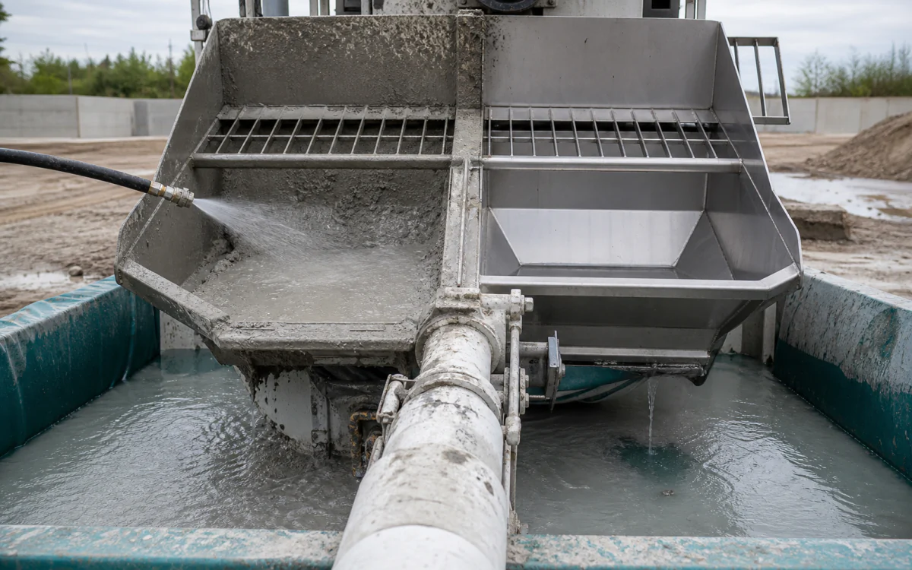

Industries › Construction
Match cement, form oil, and exterior staining to the right mechanism.
HCR or Descaler breaks down cement and mineral residue, CR HD removes form oil, and LAM3 keeps working on outdoor stains.
- CleanConcrete pumps, forms, mixers, hand tools, compact equipment, vehicle exteriors, and finished masonry
- RemoveCement film, form oil, hydraulic grease, asphalt transfer, rust, and mineral efflorescence
- Start withClear loose material first, apply the right cleaner, brush where needed, and rinse with low pressure
- ProductsVertKleen Descaler, VertKleen CIP HCR, VertKleen CR HD, VertKleen LAM3
- HMIS0-0-0 across every VertKleen product offered
- See products, first-test plan, and results
Cleaning chemistry for Construction.
Get cleaner tools and equipment without adding extra work for the crew or wash-water pickup.
See VertKleen resultsWhat matters before you switch chemistry.
Prove removal on the actual soil and surface before replacing the incumbent.
Compare cost per completed job across labor, rinse water, wastewater handling, downtime, and return to service.





Recommended
VertKleen products for Construction.
Match the formula to the soil, surface, and cleaning process.
Where VertKleen fits
Remove cement residue, form oil, and outdoor stains from tools, forms, equipment, and fleet vehicles.
- Cleaning job
- Remove cement residue, form oil, and outdoor stains from tools, forms, equipment, and fleet vehicles.
- Equipment and surfaces
- Concrete pumps, forms, mixers, hand tools, compact equipment, vehicle exteriors, and finished masonry
- What needs to come off
- Cement film, form oil, hydraulic grease, asphalt transfer, rust, and mineral efflorescence
- Products to start with
- VertKleen Descaler, VertKleen CIP HCR, VertKleen CR HD, VertKleen LAM3
- How to clean
- Clear loose material first, apply the right cleaner, brush where needed, and rinse with low pressure
- What to compare
- Finished result, crew time, product, water, passes, downtime, and repeat work.
Product files
Get the SDS, TDS, and product records your team needs.
Start with one job